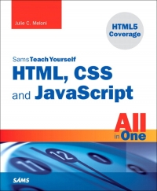

CSC205 –Programming JavaScript, HTML & CSS
Instructor Information
Instructor:
Office:
Office Hours:
Office Phone:
E-mail:
Deborah Hughes
Prescott Building 3, 260
Please email for Zoom appointment
928-776-2109 (please use email instead)
Deborah.hughes@yc.edu (Email: best way to contact me!)
Course Description
Fundamentals of web page and website creation using basic JavaScript, HTML5 and CSS3 features.

Course Content
- HTML5 document structure
- Cascading style sheets
- Multimedia content
- Integrating JavaScript in web pages
- Publishing web pages to a web server
Learning Outcomes
- Analyze the website for cross platform compatibility.
- Create Web pages.
- Employ CSS.
- Use JavaScript for dynamic effects.
- Identify syntax and logic errors.
- Deploy web page files to a web server.
Course Software Requirements
All tools listed below are available through Yavapai Cloud
Brackets – text editor - (free at: http://brackets.io/)
You may choose a different text editor however in my posted videos I use brackets.
FileZilla – for file transfer – (free at: https://filezilla-project.org/)
Textbook & Course Materials

Required Text:
HTML, CSS, & Javascript All in One
Third Edition
ISBN: 9780672338083
Author: Meloni
Publisher: Pearson
Formats: PAPERBACK, BryteWave Format
Copyright Year: 2019
Grading Policy
Methods of Evaluation
| Percentage | Descrption |
|---|---|
| 10% | Discussions |
| 50% | Assignments |
| 20% | Mid Term |
| 20% | Final |
Due Dates
All assigned work will be posted to the YC server. Completed work must be posted to Canvas by the due date / time.
You will be submitting the link to your assignment to Canvas. If the link does not work the first time I check your work you will lose 25 points. I will place a note in comments stating it does not work. You may resubmit the assignment. If the link does not work the second time I check it, you will receive a 0 for the assignment.
Late work will NOT be accepted. You will be given a grade of 0 if work is not posted by due date.
If your work is not completed by the due date, post what you do have completed by the due date – partial credit may be given based on the amount completed.
Makeup Projects Policy
Projects may NOT be made up unless an arrangement is made with the instructor prior to the due date.
Grading Timeframes
Assignments/exams to be graded within 1 week of submission
Grade Assignment
Final grades assigned for this course will be based on the percentage of total points earned and are assigned as follows:
| Letter Grade | Percentage | Performance |
|---|---|---|
| A | 90-100% | Excellent Work |
| B | 80-89% | Good Work |
| C | 70-79% | Average Work |
| D | 60-69% | Poor Work |
| F | 0-59% | Failing Work |
Institutional Policies and Instructor Procedures
Student Email
Yavapai College provides enrolled students with an official email address. Yavapai College requires enrolled students to utilize the YC email system for official college related communications. Students are expected to check their Yavapai College email account as directed by their instructor.
Information Technology Services
928.776.2168
http://www.yc.edu/its
Tobacco Use
Yavapai College is committed to limiting exposure to the harmful effects of primary and secondary smoke to campus students, visitors, and employees. In order to reduce the harmful effects of tobacco use and to maintain a healthful working and learning environment, the College prohibits smoking, including vaping, on all campuses except in designated smoking areas.
Smoking & Tobacco Use Policy (5.35).
https://www.yc.edu/v5content/policies/docs/dsa/Policy5-35-08162016.pdf
Drug Free Environment
Yavapai College’s policy is to provide an environment free of drugs and alcohol. The use of illegal drugs and abuse of alcohol pose significant threats to health and can be detrimental to the physical, psychological, and social well-being of the user and the entire Yavapai College community, and is prohibited. Campus Safety will be notified if a student exhibits an impaired state in the classroom environment.
Course Withdrawal
A student-initiated withdrawal deadline is established by the College. If a student has not withdrawn from a class by the deadline, a student will receive the letter grade earned in the course at the end of the semester. An instructor can choose to withdraw a student from the class after the deadline depending upon the instructor’s withdrawal policy. If a student does not follow official procedures for withdrawing from a course, earned grades will be posted on the student’s permanent record.
Acceptable Use
Yavapai College technological equipment and resources must be used in accordance with the Technology Resource Standards (5.27), Copyright Use (2.28) and Peer-to-Peer (P2P) File Sharing (5.26) policies. Use of Yavapai College equipment and resources to illegally copy, download, access, print or store copyrighted material or download pornographic material is strictly prohibited. For example, file swapping of copyrighted material, such as music or movies is strictly prohibited. Users found to violate this policy will have their privileges to use Yavapai College technological equipment and resources revoked.
http://www.yc.edu/policies
Student Code of Conduct
Respect for the rights of others and for the College and its property are fundamental expectations for every student. The Student Code of Conduct outlines behavioral expectations, and explains the process for responding to allegations of student misconduct. Students are expected to respond and write in a professional and appropriate manner when activities are assigned to create scenarios, discuss opinions, present on a selected subject, or post to the web board. Inappropriate language or objectionable material will not be tolerated and could result in disciplinary measures and/or a failing grade for the class.
http://www.yc.edu/codeofconduct
Disability Resources
Disability Resources ensures qualified students with disabilities equal access and reasonable accommodations in all Yavapai College academic programs and activities. YC supports disability and accessibility awareness and promotes a welcoming environment to all. The Americans with Disabilities Act of 1990 and Section 504 of the Rehabilitation Act of 1973 prohibits discrimination on the basis of disability and requires Yavapai College to make reasonable accommodations for those otherwise qualified individuals with a disability who request accommodations.
http://www.yc.edu/disabilityresources
phone 928.776.2085
email disabilityresources@yc.edu.
Acaddemic Integrity
Honesty in academic work is a central element of the learning environment. It is expected that students will submit their own work. The presentation of another individual’s work as one’s own or the act of seeking unfair academic advantage through cheating, plagiarism or other dishonest means are violations of the College’s Student Code of Conduct.Definitions of plagiarism, cheating, and violation of copyright and penalties for violation are available in the Yavapai College Student Code of Conduct.
http://www.yc.edu/codeofconduct
Mobile Devices
Yavapai College is committed to providing a quality learning environment. All cell phones and mobile devices must be placed in silent mode while in classrooms, computer labs, library, learning center, and testing areas. Cell phones must be used outside these facilities.
Attendance
Students are expected to log into Canvas at least 2X a week. A student who does not adhere to the instructor’s and College’s attendance requirements may be dropped/withdrawn from the course as defined in the Yavapai College General Catalog.
Academic Complaint Form
A student may appeal an academic or instructional decision by faculty if s/he deems the decision to be made in error. The appeal must be made in a timely manner in accordance with established procedures.
Response Time
I will do my best to address student correspondence within 2 days.
Other Instructor Procedures
The instructor reserves the right to make exceptions to any and all policy points above.